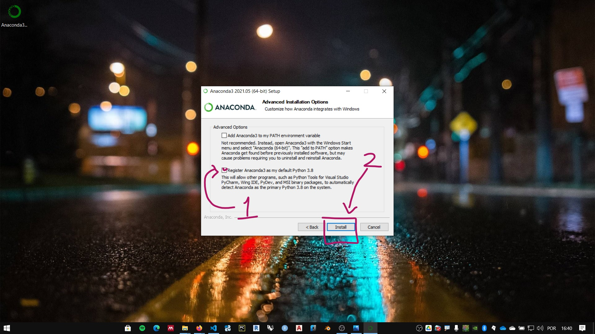

Instalação do Python
A distribuição oficial do CPython pode ser encontrada na página da Python Foundation, Python.org. Embora este seja um material rico sobre a linguagem, neste curso vamos utilizar a distribuição Anaconda.
Instalação da distribuição Anaconda
Anaconda é uma distribuição do Python orientada para programação científica e análise de dados. A página oficial da distribuição é anaconda.com

O instalador da versão individual (gratuita) pode ser baixada no link: https://www.anaconda.com/products/individual. Ou pelo menu Products, opção Individual Edition.

Clique no link de download para baixar o instalador. Certifique-se de baixar o executável compatível com seu sistema operacional.

Instalação no Windows
Siga as instruções:
- Execute o instalador

- Concorde com os termos do serviço. clique em I Agree.

- Instalar para o usuário atual do computador ou para todos os usuários. O padrão é apenas para o usuário atual (just me). Escolha sua opção e clique em Next.

- Escolha a pasta da instalação e clique em Next.

- Opções de instalação. Não é recomendado marcar a primeira opção.Pode-se marcar a segunda opção. clique em instalar e aguarde o final do processo. 
Preparando o ambiente no Windows
Note
As instruções abaixo são baseadas no Windows 10.
IDLE
O IDLE é uma interface básica para programação do CPython. Idle, em inglês significa ocioso. Em computação pode significar que o processador já executou as instruções e aguarda novos comandos. Levando em consideração:
- o senso de humor dos criadores do Python,
- e que o nome da linguagem é uma homenagem ao grupo de humor Monty Python
O nome deste ambiente pode ser uma homenagem a um dos membros do grupo, o ator, músico, escritor e comediante Eric Idle.
A simplicidade da interface IDLE é uma vantagem quando se esta começando a programar pela linguagem Python. Podemos focar na lógica de programação e características da linguagem em uma interface sem muitas distrações ou necessidades de configuração.
Para acessar a interface IDLE da instalação Anaconda no Windows:
Criando um atalho para o IDLE
-
Clique com o botão direito na área de trabalho

-
coloque o caminho do atalho conforme instruções abaixo:

-
Quando a distribuição conda é instalada apenas para o usuário atual (just me) use:
%USERPROFILE%\anaconda3\Scripts\idle.exe
ou
%USERPROFILE%\anaconda3\Lib\idlelib\idle.pyw -
Quando a distribuição conda é instalada para todos os usuários (all users):
%PROGRAMDATA%\anaconda3\Scripts\idle.exe
ou
%PROGRAMDATA%\anaconda3\Lib\idlelib\idle.pywWarning
Caso tenha instalado a distribuição em um outro caminho e não saiba qual, ou não tenha conseguido localizar o IDLE com as instruções acima, acesse o link: Encontrando a pasta de instalação da distribuição Anaconda
-
Copie o caminho para o IDLE e clique em avançar

-
Clique em concluir

-
Execute o atalho e, na tela do IDLE, digite:
print("hello, world")e aperte enter
Instalando o Chocolatley (opcional)
Os sitemas operacionais baseados em Linux, bem como o MacOs, possuem aplicações de linha de comando para instalar software. Este tipo de recurso é muito prático na resolução de problemas e conflitos. Atualmente o Windows está testando um software do género, chamado Win-get. Enquanto o win-get não estiver suficientemente robusto, a melhor alternativa para este tipo de tarefa é um programa desenvolvido por terceiros, o Chocolatey.
Abra um terminal o Windows PowerShell como administrador. Para verificar as permissões de instalação de programas via powershell, digite e cole o código abaixo:
Get-ExecutionPolicy
Caso a resposta seja Restricted copie e cole o código abaixo:
Set-ExecutionPolicy AllSigned
Para instalar o Chocolatey, copie e cole o código abaixo:
Set-ExecutionPolicy Bypass -Scope Process -Force; [System.Net.ServicePointManager]::SecurityProtocol = [System.Net.ServicePointManager]::SecurityProtocol -bor 3072; iex ((New-Object System.Net.WebClient).DownloadString('https://community.chocolatey.org/install.ps1'))
Instalando o gerenciador de pacotes Mamba (opcional)
A distribuição Anaconda instala uma aplicação de linha de comando conda. Essa aplicação serve para gerenciar pacotes e ambientes no Python. Com o crescimento do número de pacotes a validação da compatibilidade dos pacotes via conda, em alguns casos, apresenta alguma lentidão. Alternativamente uma outra aplicação de gerenciamento de pacotes desenvolvida pela comunidade tem apresentado maior velocidade na instalação e validação de pacotes. Essa aplicação chama-se Mamba.
É possível instalar a aplicação Mambaatravés da conda. Clique no menu iniciar, na pasta Anaconda3, clique com o botão direito no Anaconda prompt (anaconda3), clique em mais e escolha a opção Executar como administrador.
Note
É sempre recomendado executar o prompt como administrador para instalar pacotes

No prompt, digite:
conda install mamba -n base -c conda-forge
Aperte a tecla enter e siga as instruções de instalação e aguarde o final do processo.